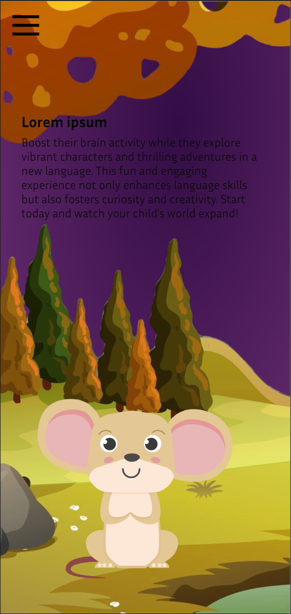
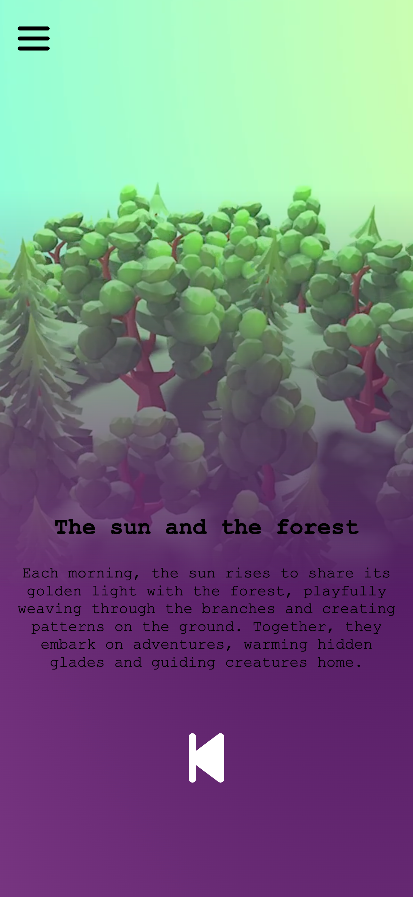
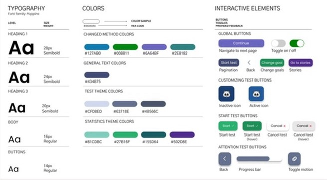
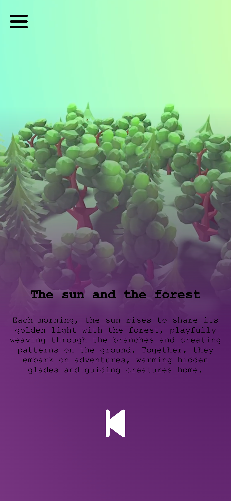
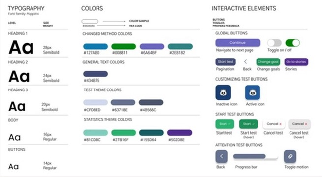

10 october 2024 Sprint review-1
Wat heb ik vandaag gedaan?
Vandaag was de sprint-review met de opdrachtgever voor de eerste sprint.

Feedback sprint review
Dit zijn de aantekeningen vlak na mijn sprint review:Feedback Mediaplayer Homepagina algemeen
Mogelijke oplossingen:
Dit is mijn feedback van de opdrachtgever maar uitgewerkt:Design Functionaliteiten
Feedback sprint review pdf
voorbereiding aantekenigen pdf
 


